等边三角形是由三条等长线段组成的三边形，其三个内角均为60°。正方形是由四条等长线段组成的四边形，四个内角均为90°。这些都是正多边形：以相等长度的线段为边界，线段相交形成的内角都相同。左边这个图形是一个正七边形（7–gon）。停车标志的形状是一个正八边形（8–gon）。
只需思考一下就可以想出正多边形有无限多的类型：正n边形指具有n（正整数n≥3）条相同边长的正多边形。
多边形是在平面里绘制的图形。如果在三维空间中绘制，会产生类似的情况吗？
多边形在三维空间中的扩展被称为多面体。多面体是立体图形，每个面都是多边形。其中人们较为熟悉的多面体是三棱柱和正四棱锥。三棱柱由三个矩形和两个三角形组成。正四棱锥由四个三角形和一个正方形组成。
我们如何将正多边形的概念归纳到三维图形中呢？正多边形具有全等的边和角。
如果扩展到三维图形则要求多面体的所有“部分”全等。也就是说，我们要求：
●多面体的所有边全等，
●两条边相交形成的所有角全等，
●在每个顶点（角）相交的边的数目相同，
●且由同一条边连接的两个面之间形成的角全等。
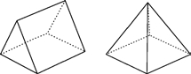
长度相同的线段或大小相同的角被称为全等。全等的概念可以适用于线段和角度之外，任何两个形状完全相同的图形都可以被认为是全等的。
前两条要求意味着正多面体的面是全等的正多边形。
也许最著名的正多面体是立方体，它由六个面组成，每个面都是正四边形（正方形）。除了立方体外，下图还显示了其余四种正多面体。
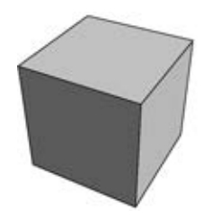
立方体
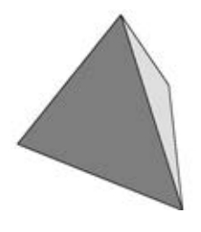
正四面体
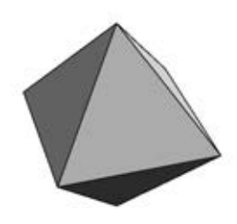
正八面体
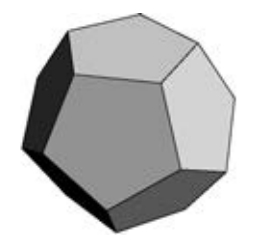
正十二面体
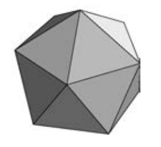
正二十面体
●正四面体由四个等边三角形组成。
●正八面体由八个等边三角形组成。
（想象粘在一起的两个正四棱锥。）
●正十二面体由十二个正五边形组成
●正二十面体由二十个等边三角形组成。
下图为正多面体的平面展开图。你可以尝试临摹这些图形，将它们剪下按线条折叠起来，并粘在一起做成纸模型。这样的材料包也可以买到。
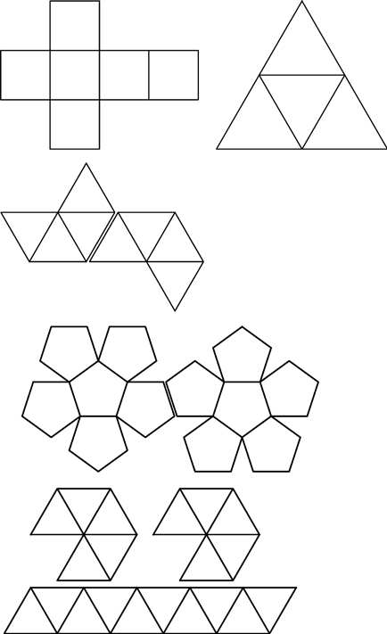
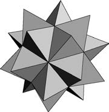
星状二十面体
上图中的五种正多面体被称为柏拉图立体（Platonic solids）。还有其他种类的正多面体吗？如图显示了一个星状二十面体（stellated icosahedron），它的每个面都是等边三角形，但它不是一个正多面体，因为面与面之间的角度并不完全相等，并且在顶点相交的边的数量是不同的（最外侧的角连接了三条边而里面的角连接了十条边）。
帮助我们寻找更多的正多面体的是一个有趣的公式，它归功于欧拉（我们在第7章中介绍过）。
一个多边形的顶点（角）的数量与边的数量一样多。多面体的情况较为复杂，因为它们由顶点、边和面组成。下面这个图表显示了我们目前为止所考虑的所有多面体的组成部分的统计：
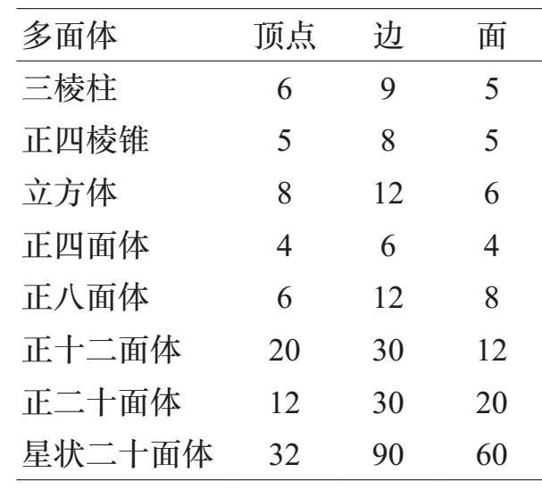
当你在这个图表中寻找规律时，你可能注意到立方体和八面体的数据是相反的：（8，12，6）与（6，12，8）。对于十二面体/二十面体来说，也存在相同的现象：（20，30，12）与（12，30，20）。这种逆转源于一种被称为对偶（duality）的现象。
仔细观察这张图表，看看是否可以发现多面体的顶点、边和面的数目之间存在某种关系。
答案在下面，但如果你能自己偶然发现这个方程式，那会更有趣。使用变量V，E和F分别表示顶点、边和面的数量。
如果在立方体六个面中的每一个面的中心取一个点，然后将同一条边连接的面上的点相连，则立方体内会出现一个较小的多面体：它是一个正八面体。相反，如果在正八面体的每个三角形面的中心取一个点并连接这些点，则会形成一个立方体。正二十面体和正十二面体也存在同样的对偶。
当你考虑V，E和F之间的关系时，让我们暂停查看表中的条目。对于一个简单的立体，如正四棱锥，计量各部分的数目并不难。有五个顶点（围绕着底面的四个和在顶点的一个），八条边（底面的四条和通往顶角的四条），五个面（四个三角形和一个正方形）。四面体和棱柱很容易核对。立方体不是太具有挑战性，因为它是我们十分熟悉的形状，有八个顶点（顶部四个，底部四个）、十二条边（顶部四条，底部四条，垂直四条）和六个面（我们都玩过骰子）。
其他多面体大多难以可视化，将它们压平会有所帮助：假设多面体是空心的，我们用剪刀剪掉其中一个面；然后，我们将这张空的面张开，直到立体被压扁。结果如下图所示：
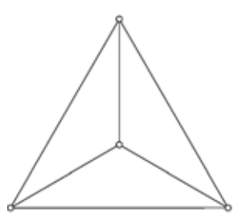
正四面体
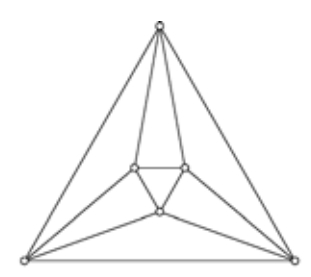
正八面体
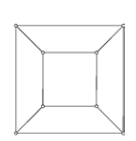
立方体
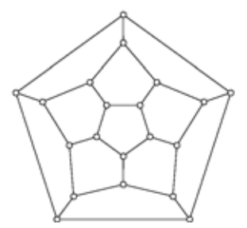
正十二面体
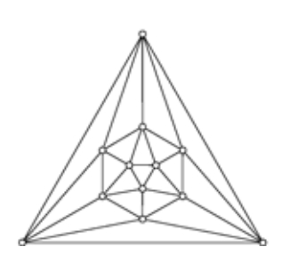
正二十面体
我们从正八面体开始吧。从图中可以很容易地看出V=6。计算面的数目，很容易得出7这个错误的答案，但是记住，在我们压扁之前剪掉了一个面，所以F=8。
下面是计算边数更容易的一个技巧。对于图中的每个顶点，在与每一条边相交的每个角的旁边做一个标记，如下所示：
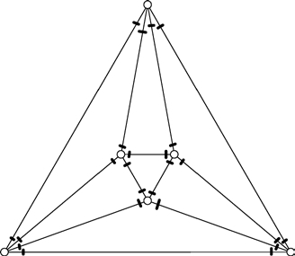
我们做了多少个标记？由于每个顶点有四条边相交，所以标记的数量是顶点数量的四倍：4×V=4×6=24。另一方面，每条边都有两个标记，所以标记的数量是2×E，所以E肯定是12。
让我们将同样的思路用于正二十面体上。看着平面图，我们看到在最外面的角有三个顶点，另外有六个，它们组成一个六边形，然后位于中心有三个，得V=3+6+3=12。计算面，最外面的顶点形成了9个三角形，五边形内有9个三角形，最里面还有一个，得9+9+1=19，但是还有我们剪掉的一个，因此F=20。最后，为了计算边数，我们使用了与之前相同的“标记技巧”。如果我们在每个顶点旁的边上做标记，我们将总共标注5×12=60个标记：在十二个顶点的每一个顶点旁有五个。按照这种方式，每条边上都有两个标记，我们得出E=30。
现在是时候让我们揭示欧拉首先推导出来的并且（我们希望）由你发现的关于多边形的顶点数V，边E和面F的有趣关系了。
注意，顶点与面的数量之和V+F总是比边的数量大2。例如，对于立方体，V=8且F=6，V+F=14，比E=12大2。我们可以把这个关系写成V+F=E+2，但欧拉公式按照传统已经写为：
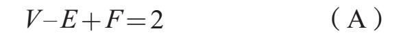
让我们看看它的原理。
我们首先将多面体平面压成平面，去掉一个面后展平。由于被去除的面对应的是围绕整个图形的范围，因此平面图中的面的数量正好等于面的数量F，所有其他面对应的是有限范围。这个图中的顶点、边和面的数量分别是V，E和F。代数表达式V–E+F得出了某个数值；我必须说服你，这是2。
多面体的平面展开是一种图9的范例——网络数学抽象。
为了说服你相信V–E+F=2，我开始擦除一条边。顶点、边和面的数量会发生什么变化？顶点的数量不会改变——我所做的只是擦除了一条边。当然，边的数目减少了1。面的数量会发生怎样的变化？正如你在图片中看到的那样，位于这一条边两侧的两个面结合形成了一个单一的面，所以面的数量也减少了1。如果新图的顶点、边和面分别为V'，E'和F'，则这些变化后的数量与变化前的数量关系为：
V'=V，E'=E–1，F'=F–1
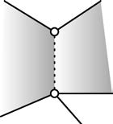
那么V'–E'+F'=V–（E–1）+（F–1）=V–E+F。如果我能说服你V'–E'+F'=2，那么我就证明了V–E+F=2。
下面是策略：
我将继续擦去图中的边线。我每擦除一次，都会失去一条边，也会失去一个面（因为两个面相结合）。但是我需要谨慎，因为当我擦除边线时，可能会遇到一种情况，可能会擦掉边线两边是同一区域的边界部分（图中的粗线）。这样的边不会是图中某个圈的一部分，因为这个圈会将该平面分成边内部区域和外部区域。所以只要这些边是一圈边的一条，我就可以安全地将它们擦除。每次我都把边的数量和面的数量减1，所以V–E+F的值（不管它是什么）不会因为这样的擦除而变化。
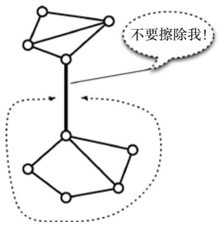
最终我会得出图中没有完整的圈。所有的区域都合并为一个（所以在这个时候，F=1），再没有任何边可以被“安全地”擦除。（见图）我们现在切换到寻找和消灭任务的第二阶段。
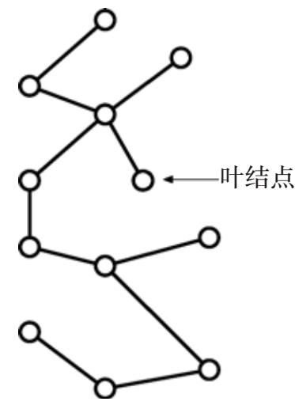
图中现在没有完整的圈。选取一个顶点，任意一个顶点，并从该起始位置开始沿着边和顶点的路径前行。由于没有圈，这条路径不能再回到先前所在的顶点。但是这条道路也不会永远没有尽头（只有有限的顶点）。所以路径必定最终被“卡在”一个顶点处，这个顶点是单独一条边的终点。这样的顶点叫作叶结点。我们下一步要删除一个叶结点和与它相连的边。V–E+F的值会发生什么变化？顶点的数量减1（我们删除的叶结点），边的数量减1（与该顶点连接的边），面的数量不变（仍然是1）。用V′，E′，F′代表删除顶点和边后的数量，得
V'=V–1，E'=E–1，F'=F=1
因此V'–E'+F'=(V–1)–(E–1)+F=V–E+F。在叶结点/边删除之前，无论V–E+F的值是多少，新的数值不变。
从图中删除了一个叶结点和边之后，我们留下了一个没有圈的新图。所以我们找到另一个叶结点，删除它以及和它相连的边，然后不断重复。我们持续删除，直到图中只剩下一个顶点。每删除一次顶点和叶结点，V–E+F的值保持不变。
总结：我们把多面体变得平展。我们删除一个圈中的一条，直到不再有循环。虽然数字V，E或F可能会改变，但V–E+F的数值不会。当所有循环消失后，我们不断寻找一个叶结点和与它相连的边，直到整个图缩减为只剩一个顶点。同样，尽管个别值V，E和F可能改变，但是V–E+F的值不变。在最后，我们有一个单一的顶点，没有边和单个区域（单一顶点周围的无限区域）。也就是说，最后我们得V=1，E=0和F=1。有了这些数字，得V–E+F=2。由于删除不影响V–E+F的整体值，最开始的图必定服从关系V–E+F=2。欧拉多面体公式（A）的证明完成了！
我们介绍了五个正多面体：四面体、立方体、八面体、十二面体和二十面体这五个柏拉图立体。在公式（A）的帮助下，我们将证明只存在这五个柏拉图立体，没有更多。
我们将用五个数字来描述正多面体。前三个是已经熟悉的V，E和F，分别是顶点、边和面的数量。正多面体的每一面都是正多边形，我们将用n代表每个面上的边数。投射在正多面体顶点的边数在每个顶点都是相同的，我们将用r代表这个数字。
下面是五个数字的概要，以便参考。
V：顶点的数量
E：边数
F：面的数量
n：围绕一个面的边数
r：在一个顶点相交的边数
以下是五个柏拉图立体的数据：
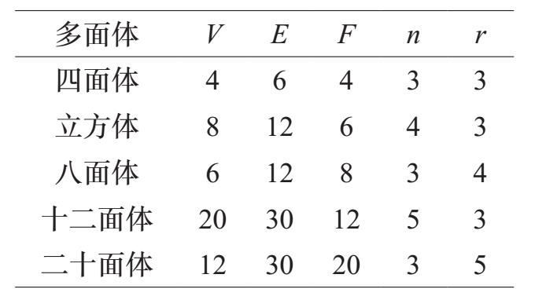
现在我们找出这些数量之间的一些代数关系。第一，是欧拉公式，我们在这里做一下复习：
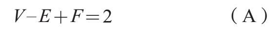
第二，我们用标记技巧找出E，V和r之间的关系。我们在每个边靠近末端的位置做一个小标记。这样，每条边都有两个标记（每一端都有一个），所以标记数量是2E。另一方面，我们在每个V顶点旁做r个标记，因此我们做了rV个标记。由于这些都是正确的标记数量，它们必定相等：
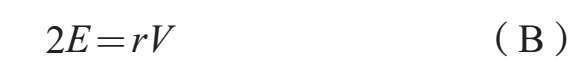
第三，我们再次使用标记技巧，但是这次来自面。也就是说，我们围绕每一个面，并在它周围的边上做标记。和以前一样，每条边都有两个标记（每端一个）。一方面，标记的数量是2E（因为每个边都有两个），但是另一方面，标记的数量是nF（每个F面有n个）。因此：
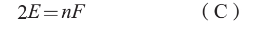
我们来检验十二面体的方程（A），（B）和（C）：
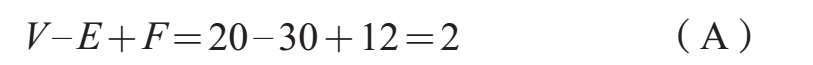
2E=2×30=60=3×20=rV，且（B）
2E=2×30=60=5×12=nF （C）
从（B）得
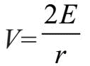
，从（C）得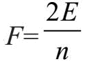
。把这些代入（A）得V–E+F=2
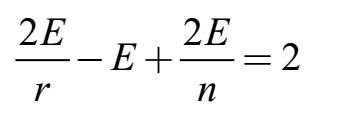
代入
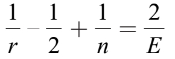
除以2E
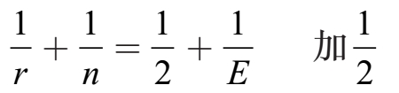
←我们之后会用到这个方程
因
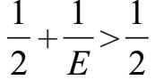
我们得出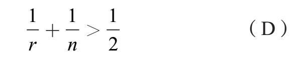
关系式（D）意味着r和n不能太大。例如，我们不能令r = n = 5，因为那样的话
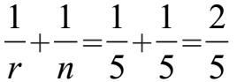
，不能大于21 。我们来计算rn和的可能值。首先注意，n和r必须至少为3。面是n面，最小的多边形是三角形，因此n≥3。多面体是一个立体，如果r=2，那么在一个顶点只能有两个边与之相连。我们至少需要r≥3才能使这个形状具有厚度。
现在我们来看看n的可能值。
●n=3。由（D），
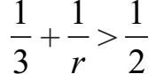
。两边减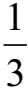
得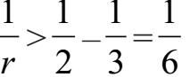
，这意味着r＜6。●所以如果n=3，r的唯一可能的值是3，4和5。
●n=4。由（D），
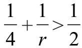
，导出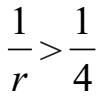
或者r＜4。在这种情况下r的唯一可能值是3。●n=5。由（D），
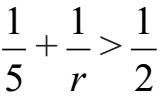
，得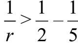
，因此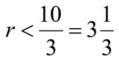
。这意味着r=3。●最后，n≥6，所以
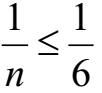
。由（D），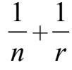
，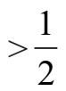
得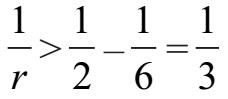
。这意味着r＜3，这是不可能的。因此，n不能大于或等于6。总而言之，这对值（n，r）只有五种可能性：
（3，3），（3，4），（3，5），（4，3），（5，3）。
给定n和r的值，我们可以计算E的值（使用方程
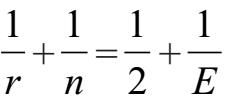
），然后我们可以使用方程（B）和（C）推导出V。以下是五种情况下的计算结果：1111 ●（nr，）=（3，3）：由得
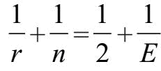
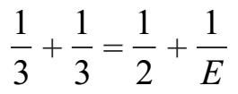
，得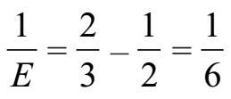
，因此26E=6。●由（B），2E=rV，得12=3V，因此V=4。
●由（C），2E=nF，得12=3F，因此V=4。
●结论：（n，r）=（3，3）导出（V，E，F）=（4，6，4），将F=4个等边三角形（n=3）组成一个立体的唯一方法是形成四面体。
●
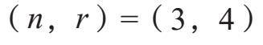
：由 得，因此 得E=12。●由（B），2E=rV，得24=4V，因此V=6。
●由（C），2E=nF，得24=3F，因此F=8。
●结论：（n，r）=（3，4）导出（V，E，F）=（6，12，8），将F=8个等边三角形（n=3）组成一个立体（在每个角都相连r=4个三角形）的唯一方法是形成八面体。
●（n，r）=（4，3）。计算结果几乎与（3，4）的情况相同，得（V，E，F）=（8，12，6），将F=6个正方形（n=4）组成一个立体，令在每个角相交的边数r=3的唯一方法是形成立方体。
●（nr，）=（3，5）。由得，因此得E=30。
●由（B），2E=rV，得60=5V，因此V=12。
●由（C），2E=nF，得60=3F，因此F=20。
●结论：（n，r）=（3，5）导出（V，E，F）=（12，30，20），将F=20个等边三角形（n=3）组成立体，令在每个角相交的边数r=5的唯一方法是形成二十面体。
●（n，r）=（5，3）。计算与（3，5）的情况几乎相同，得出（V，E，F）=（20，30，12），将F=12个正五边形组成一个在每个角有三条边相交的立体是十二面体。
得益于欧拉的非凡公式和一些代数，我们证明了五种柏拉图立体是仅有的正多面体！
正多面体的面都必须是相同的正多边形，但是如果我们放松这种限制，就会出现新的多面体类型。我们仍然要求面是正多边形，但我们允许混合不同类型的多边形。与此同时，我们强加了一个对称性要求，即多面体在每个顶点看起来“相同”。我们称这样的多面体是半正多面体。
例如，我们可以用两个等边三角形和四个正方形组成一个棱柱。棱柱的每个角看起来都完全一样：它是两个正方形和一个三角形的连接点。
我们可以制作其他形状的棱柱。例如，我们可以用五个正方形连接两个平行的正五边形。这样，就得到了一族的无数个半正多面体。
还有另一个无限的家族：取两个相互平行的正n边形（例如五边形），但是将其中一个旋转到另一个的一半处，将一个上面的点连接到另一个上面的点上，形成一圈以z字形排列的三角形；如果我们将两层之间的距离调整得恰到好处，这些三角形将是等边的，以这种方式形成的多面体被称为反棱柱（antiprisms）。
柏拉图式立体之一是棱柱（如图），另一个是反棱柱。你能区分它们吗？答案见[2]。
棱柱、反棱柱和柏拉图立体不是仅有的半正多面体。此外，还有十三个阿基米德多面体（Archimedian solids）。这些多面体的完整记录可以在别处找到，这里我们只介绍一个最喜爱的。如果沿着二十面体的一个角切下，横截面将是正五边形，因为在每个顶点处有五个三角形相连。如果我们沿所有十二个角切下，那么这二十个三角形的面就变成了六边形。如果切割到一个精确的深度，那么这些六边形的边长将是相等的。结果是一个截角十面体（truncated icosahedron）。如果我们用结实的面料做出这个二十面体的物理模型，把六边形涂成白色，把五边形涂成黑色，然后充气，结果便是我们熟悉的足球！
[1]答案：正七边形的各边相交形成的是的角。原因如下：将正七边形分割成相交于中心一点的七个等腰三角形，这些等腰三角形的顶角大小为°。设x是等腰三角形的底角，得；正七边形的角为底角的两倍，因此是。解出。
下面是另一种思路：一个n边形的各角之和是180（°n–2），在正n边形的情况下，所有的角是相同的，所以每个角的大小为；将n=7代入得。
[2]柏拉图式棱柱/反棱柱：立方体是由两个正方形构成的棱柱，八面体是由两个正三角形构成的反棱柱。